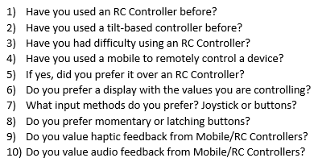

The Worst Possible Idea
Joshua Ofosu Asare 2111739
BEng Embedded Electronic Systems
Choosing the Right Approach
Quantitative research strategies that could be used for this project are methods that rely on the testing of facts and figures [1]. This method draws conclusions that are often used to confirm a closed question [1]. Meanwhile qualitative research isn’t closed in the same way quantitative research is – the questions tend to be open ended questions [1]. This method explores the topic a lot more since the scope of the questions being asked is much greater. For this project, both research methods will be helpful. Qualitative research can be conducted to gather data that will allow the specific nature of the research to be defined by identifying the problem and starting to explore current and proposed solutions to it. This also provides an opportunity to run a sanity check on the project. Quantitative research is a way to get specific feedback and data concerning specific project details. For the context of this project, a key area to collect data around concerns how users prefer to interface with remote devices: via a Web/Mobile Application, a handheld controller with and without gyroscope and accelerometers embedded within.
Finding a Needle in a Haystack
Interviews are an invaluable method of collecting qualitative research data and have been the ‘gold standard’ [2]. They are exemplary when trying to determine how people make decisions, examining perceptions – which will be useful for this project as we would like to be able to objectively tell if our design has a positive or a negative sentiment towards it. Sampling is another method of collecting data we can explore. Often, it is not possible to collect data from an entire populace, and as such you must decided on a subset of the population to collect the data from instead. This approach is used in both Qualitative and Quantitative research since it is not uncommon for a study to be unable to sample the entire population it is interested in. By identifying biases in the group that was selected in a sample, the validity of the data can be understood. For example, if the majority respondent group for a study examining the effects of caffeinated drinks in attention span over a day were 12–16 year-olds, the data would only be valid for that group. Qualitative and Quantitative variables differ. “Quantitative variables are characteristics or features that are best expresses by numerical values” [3]. “Qualitative variables are characteristics or qualities that are not numerical” [3]. While a variable can be either quantitative or qualitative, some of the restrictions that may be applied to quantitative data can be applied to qualitative data by confining the number of responses. E.g. giving survey respondents a choice of fast food restaurants they have heard of before. This project will be employing a survey to collect data. The template is as follows:

[1] UWTSD. (2022, 07 14). Choosing the right approach. Retrieved from UWTSD Equal: https://uwtsd.equal-online.com/courseplayer/uowehe/?ls=8132838&s=80244
[2] Harding, J. (2019). Forms of data collection. In J. Harding, Qualitative data analysis : from start to finish, Second edition. (p. 44). London: SAGE.
[3] Antonius, R. (2003). Variables and Measurement. In R. Antonius, Interpreting quantitative data with SPSS (pp. 11-14). London: SAGE.